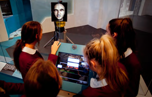
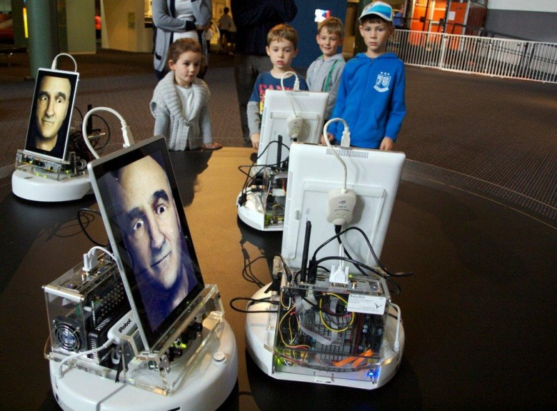

Articulated Head
The Articulated head is an industrial robot with an LCD monitor at its end effector. On this monitor a virtual talking head is shown.
For more detials.

Engineering Empathy
These are disc-shaped vacuuming robots with sensory equipment and a screen displaying a face. They have advanced sensors, face and gesture recognition to interact with human.
For more details.
Swarming Heads Robots
Swarming Heads is the artistic interpertation of the project by Stelarc. A work-in-process installation in Sydney has seven robots with on-board sensors for detecting human interlocutors and means to acknowledge each other.
For more details.